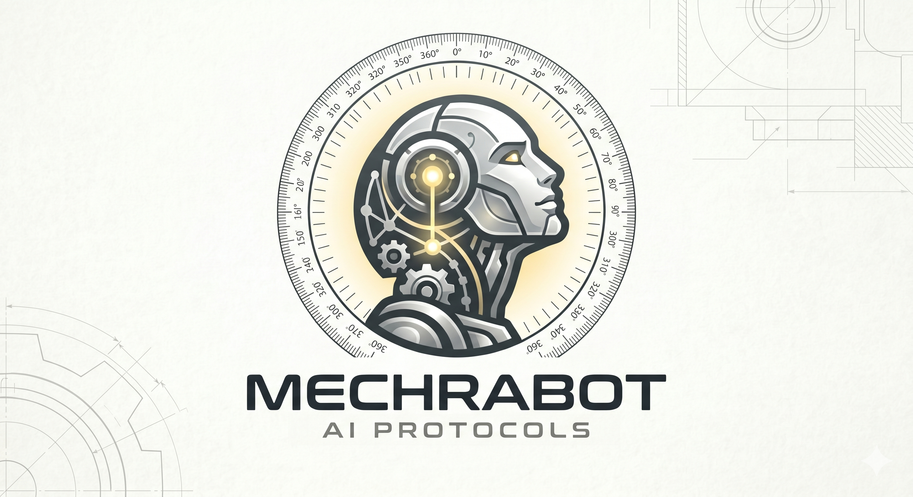
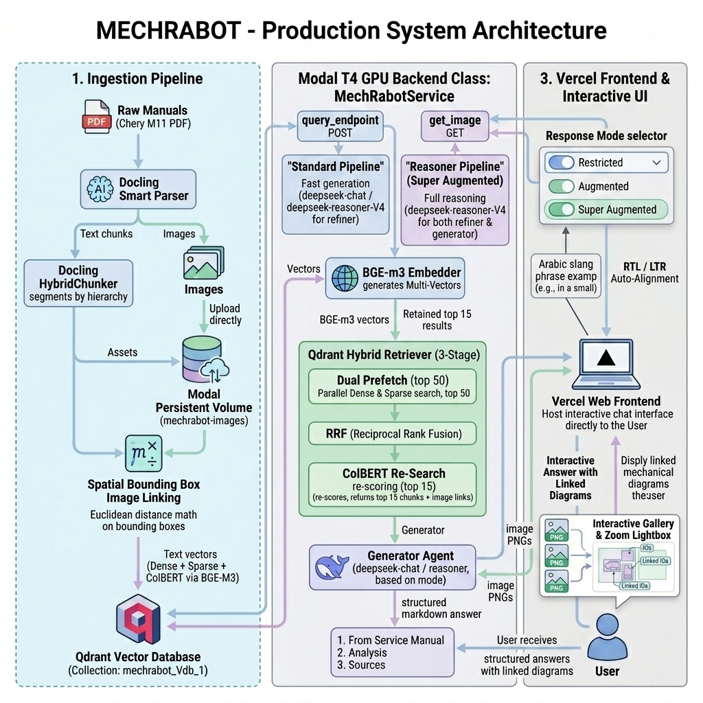
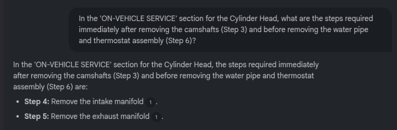
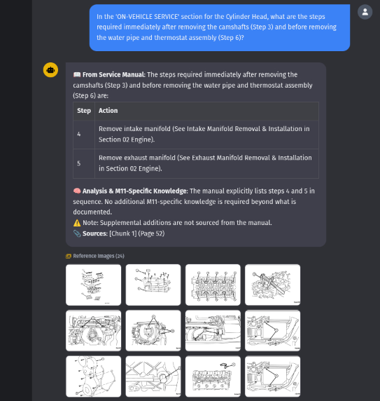

MECHRABOT
Economical Hybrid-RAG Engine for Complex Industrial & Maintenance Technical Documentation
The Search Drain in Industrial Maintenance
-
The Maintenance Search Drain
Engineers and mechanics waste 30 minutes to 2 hours per task just trying to locate specifications and diagrams in 500-page service manuals.
-
Ctrl+F is Unusable
Fails completely due to variations in technical terminology, language translation, colloquial slang, and undocumented abbreviations.
-
The Brain Drain Epidemic
Critical mechanical diagnostic knowledge remains locked in the heads of senior experts. When they retire, that legacy knowledge is lost forever.
A Broken Bridge Between Man and Manual
Technical manuals are mathematically static and structurally complex. Humans speak dynamically. Standard systems cannot align the two.
Democratizing Industrial AI: The Market Matrix
| Competitor | Pricing Model | Target Scale | Entry Barrier | MechRabot Advantage |
|---|---|---|---|---|
| Siemens Copilot | Mega Enterprise High setup + heavy infra fees |
Global Manufacturers / Mega Factories | Locked into Siemens ecosystem and permanent servers | 20× Cheaper Run-Cost: Serverless GPU means zero idle fees |
| Cognite Data | Premium SaaS Thousands/mo on pipelines |
Large Oil & Gas, Mining, Global Fleets | Requires months of cleaning & massive data lakes | Instant PDF Ingestion: Docling converts raw manuals in minutes |
| Mavenoid | Mid-to-High SaaS Tiered by flows/active users |
Hardware brands, large dealer networks | Needs manual engineering to build decision trees | Zero Manual Setup: Hierarchical RAG learns layout directly |
| MechRabot | Lean & Economical < $0.25 / 20 queries |
Any Scale, Anywhere Workshop to Ad-Tech/Web From local shops to high-throughput ad servers |
Requires initial open-source pipeline setup | Bridges the Slang Gap: Translates localized slang directly to OEM specifications |
Slide Pitch
"While global multi-million dollar solutions target massive industries with massive budgets, they leave a huge Precision & Language Gap in regional markets."
MechRabot democratizes AI. It is built to work at any scale, anywhere—scaling seamlessly from local workshop assistance to high-throughput web and ad-tech systems. It eliminates manual prep, runs 20× cheaper, and bridges slang to precise specifications.
Why Standard RAG Fails on Technical Manuals
1. Table Context Collapse
Standard RAG slices tables blindly. A single row containing Torque: 65 N·m becomes an "orphan chunk", stripped of its parent section headers. The system forgets whether this specification belongs to a head bolt or an oil pan.
2. Jargon & Redundancy Blur
Engineering books repeat generic terms like "tighten", "torque", or "install" thousands of times. Dense vectors collapse these similar lexical structures, returning irrelevant pages while missing the exact technical match.
3. Numerical Blindness
Dense vector embeddings treat tiny variations (like 10 N·m vs. 10.5 N·m) as semantically identical. However, in heavy engineering, these minor variations determine correct installation vs. stripped threads.
Engineering Breakthroughs: Overcoming the Limits
1. Layout Parsing
Defined Problem: Standard tools shred complex engineering structures, flattening tables into unreadable strings.
Overcome: Integrated IBM's elite layout-aware document parser, **Docling**, boosted with deep neural OCR to reconstruct complex columns, grids, and technical tables.
2. Precision Accuracy
Defined Problem: Minor number discrepancies cause unsafe assembly mistakes due to sparse token blindness.
Overcome: Leveraged the elite multi-vector flagship, **BGE-M3**. Simultaneously processes semantic dense, exact sparse (BM25), and late-interaction ColBERT matrices on the GPU.
3. Scalable Economics
Defined Problem: Keeping dedicated heavy GPU servers running costs thousands of dollars a month.
Overcome: Structured a serverless setup on Modal, bringing the cost of a single user query down to **0.5 cents ($0.005)**. Simple, lightweight ad units fully absorb and subsidize this operational cost.
Field Benchmark: The Chery A3/M11 Service Manual
The Ultimate Technical Stress-Test
To evaluate the extreme limits of MECHRABOT, we selected a highly complex, 1,300+ page OEM technical document: the **2009 Chery A3/Orinoco M11 Service Manual**.
-
1,300+ Dense Engineering Pages
Packed with high-density exploded component diagrams, electrical wiring paths, and multi-layered charts.
-
Multi-System Diagnostic Layers
Covers complete ACTECO engine specs, mechanical tolerances, OBD trouble codes, and assembly clearances.
-
High-Stakes Precision Tolerances
A difference between 10 N·m and 10.5 N·m torque specs is the difference between correct mounting and stripped cylinder threads.
Model Scope Coverage
ACTECO 1.6L / 1.8L / 2.0L
Torque constraints, head clearance logs, valve timings.
QR519 MT / QR019 CVT
Gear tolerances, fluid limits, solenoids circuit values.
ABS / Steering / Suspension
Brake pad clearances, caliper tolerances, pressure levels.
CAN-Bus / Wiring Harness
Fuses layout, harness pins resistance values, sensor routes.
Interactive Demo: Table Context Preservation
Interactive Chunk Inspector
Context Injector
Standard RAG libraries (like LangChain recursive splits) cut documents based strictly on character limits, discarding all parent-child layout relationships.
MechRabot traverses the raw HTML/layout tree to map heading parents. Every isolated table row is automatically enriched with its full parent path tags (e.g. ENGINE > CYLINDER HEAD).
Pragmatic PDF Ingestion: Parser Configurations
Ingestion Configuration
-
Neural OCR Enabled (do_ocr=True)
Traces non-selectable scan data to read exact engine numbers and mechanical labels without loss.
-
Image Reference Mode ("referenced")
Avoids bloating data vectors with bulky inline base64 strings by writing clean file paths (e.g.
extracted_artifacts/image_...png).
Why Docling Defeats Traditional Parsers
Unlike naive rule-based string dumps (e.g. PyPDF) that scramble columns, break tables apart, or strip images, IBM's Docling combines deep visual layout-classifiers with OCR. It respects multi-column streams, structures cells, and grounds diagrams with spatial coordinates.
How Docling's Hybrid Chunker Operates
The Architecture of Structure-Aware Splitters
Traditional RAG uses naive text splitters (e.g., fixed 500 characters) which inevitably cut through the middle of critical tables or torque specifications. Docling's HybridChunker bridges the gap between layout elements and token limits.
-
1. Rich Structural Ingestion
Receives document nodes from the PDF layout parser (headings, lists, tables) rather than treating the document as an unstructured text block.
-
2. Dynamic Heading Bundling
Traces node hierarchies upwards and prepends paths (e.g.,
ENGINE > CYLINDER HEAD) directly to chunks so vector matching captures absolute context. -
3. Smart Boundary Protection
Treats tables and bullet lists as indivisible logical blocks, completely avoiding mid-sentence cuts or row fragmentation.
ENGINE > CYLINDER HEAD
Step 1: Install cylinder head gasket. Inspect fit closely.
Step 2: Tighten bolts in a criss-cross pattern. [Torque: 65 N·m]
Context Rupture
The naive splitter cuts Step 2 right down the middle, stripping it of its context path. Searching for "cylinder head bolt torque" matches Chunk 2, but the LLM lacks context!
Context-Rich Chunking: Hierarchy & Spatial Data
Chunking & Context Enrichment
-
Tree Context Prepending (contextualize())
Automatically traces section hierarchy upward and prepends root context directories directly to each text block (e.g.
ENGINE > CYLINDER HEAD). -
Accurate Table Former Mode
Invokes deep neural boundaries to parse rows and cells perfectly, mapping linked items to their parent schemas.
Ingestion Quality Report (2,790 Chunks)
Text Chunks
Table Chunks
Context Path Enrichment
With Bbox Diagrams
The BGE-M3 Multi-Vector Ingestion Strategy
BGE-M3 is the only open-source embedding model that extracts three distinct representation vectors simultaneously in a single, high-performance inference pass:
-
1. Dense Vectors (1024-dim)
Captures semantic meanings and contextual mapping (concept matching, e.g. finding "cylinder block seal" under "gasket").
-
2. Sparse Vectors (Lexical BM25)
Guarantees precise token matches for exact numbers, specifications, part counts, and safety tolerances (no semantic approximations).
-
3. ColBERT (Late-Interaction Tokens)
Applies fine-grained token-level cross-matching, handling automotive model codes, abbreviations, and slang alignment.
Dense Concept Vectors
Maps the complete sentence to a 1024-dimensional semantic landscape. Focuses on broad ideas (e.g. matching "radiator leak" to "coolant loss").
The Foundation: Why Qdrant Vector Database?
Standard relational databases fail at high-dimensional vector search. MechRabot chooses **Qdrant** as the central storage and retrieval brain because:
-
1. Generous Free Cloud Quota
Provides 1GB of memory on Qdrant Cloud. Easily accommodates MechRabot's total 2,790 chunks and payloads for $0 USD monthly cost.
-
2. Superb Web UI Dashboard & Tooling
Intuitive telemetry control pane. Native JSON collection browser, interactive search consoles, API playground, and performance monitoring.
-
3. Native Multi-Vector Retrieval Pipeline
First-class native capability to execute and fuse Dense, Sparse (lexical BM25), and ColBERT multi-vectors simultaneously in a single collection.
The 3-Stage Qdrant Hybrid Retriever
Stage 1: Dual Prefetch Channel
Runs dense and sparse searches concurrently inside Qdrant vector index collections:
- Dense ANN (top-50)
- Sparse BM25 (top-50)
Stage 2: RRF Rank Fusion
Merges separate ranks mathematically, dampening dominance with constant k=60:
Stage 3: ColBERT Late Interaction
Applies token-by-token matrix cross-scoring to retrieve the **best 15 chunks** (adjustable hyperparameter) from the RRF output:
System Benchmark: RANX Zero-Shot Evaluation
To establish a baseline, we executed rigorous mathematical testing on BGE-M3 (zero-shot) across 30 complex automotive queries from evaluation_30_V1.json using the RANX information retrieval package.
Benchmark Metrics
| Metric | Baseline Score | Practical Meaning |
|---|---|---|
| MRR@10 | 0.5133 | On average, correct chunk appears at Rank 2. |
| Recall@1 | 0.4000 | 40% of queries retrieve the correct chunk at Rank 1. |
| Recall@5 | 0.6667 | 67% of queries successfully solved in the top 5. |
Production DAG: Modular Pipeline Execution Flow
MechRabot wires all discrete operations into a single deterministic Haystack Pipeline Graph (DAG) as defined in app/core/pipeline.py.
embedder emits three distinct vector outputs simultaneously, routed straight into Qdrant's multi-index collections in a single retrieve step.
Agentic Orchestration: Why Haystack Over LangChain?
MechRabot's production stability relies heavily on Haystack 2.x. Unlike bloated, high-maintenance frameworks, Haystack enforces modular predictability.
Deterministic Component Protocol
Components use explicit Python type hints for inputs and outputs. Connections are statically validated before execution, preventing runtime failures.
Lightweight Custom Wrapper DX
Trivial integration of custom code: just add a @component decorator to a standard class and write a typed run() method. No bloated abstractions.
Production-Grade Stability
Avoids LangChain's frequent breaking updates, fragile LCEL syntax, and abstract class bloat. Predictable code means zero-maintenance deployments.
1st Stage: Core Translation & Query Refiner Prompt
The first stage uses a customized, high-precision translation agent template defined in app/core/prompt_refiner.py to normalize mechanic dialect before embedding.
Dynamic Slang Translation
Converts colloquial Egyptian mechanic dialect (e.g., "كاتينة", "بوجيهات") directly to standard English terms.
Strict OEM Vocabulary Mapping
Maps alternative tech phrasings to the precise engineering vocabulary of official Chery M11 service manuals.
Precision-Retaining Zero-Bloat Constraint
Strips conversational fillers and question words. Retains exact values (DTCs, N·m, mm) and outputs ONLY raw keywords for embedding.
Click to Refine:
Refiner Output
Final Stage: Context-Grounded Response Generator Prompt
The final stage uses a highly sophisticated contextual prompt defined in app/core/prompt_generator.py to assemble the final answered output.
XML Structured Context Parsing
Retrieved documents are compiled using custom XML blocks enclosing page numbers, section hierarchies, and table types.
Response Mode Isolation
Jinja2 conditional logic automatically toggles strictly grounded output vs. supplemental Chery-specific automotive knowledge.
Strict Citation & Language Lock
Consolidates citations to the bottom section. Matches output language exactly with user query (supports dynamic Arabic replies).
System Metrics & Retrieval Performance
| Query Split (No Refiner) | MRR@10 | NDCG@10 | Recall@5 |
|---|---|---|---|
| 🇬🇧 English Only (20 Q) | 0.6600 | 0.7074 | 0.8500 |
| 🇸🇦 Arabic Slang (10 Q) | ~0.2000 | ~0.2200 | ~0.2000 |
| 📊 Overall Corpus (30 Q) | 0.5133 | 0.5485 | 0.6667 |
| 🚀 Projected (With Refiner) | 0.70 - 0.78 | 0.75 - 0.82 | 0.88 - 0.92 |
Performance Analysis
-
English Base represents true capacity: baseline MRR of 0.66, with 85% of queries fully retrieved in the top 5 documents.
-
Arabic metrics highlight vector gaps: Arabizing queries directly without translation yields poor retrieval (~0.20 MRR).
-
Refinement agent raises results: Translating Arabic slang to English first pushes cross-lingual RAG to near-English performance levels.
Serverless GPU Cloud Deployment Architecture
Remote serverless pipeline orchestrator powered by Modal (defined in app/modal_app.py) to run heavy model pipelines on-demand.
Serverless T4 GPU Autoscale
Leverages cost-efficient NVIDIA T4 GPUs with active scale-to-zero autoscaling (10-minute timeout), preventing idle resource charges.
Mounted Weights & Asset Volumes
Dedicated remote caches mount HuggingFace weights and dynamic Chery M11 wiring diagrams instantly into local container directories.
Sub-Second Cold Boot Latency
Optimized Debian-Slim image construction sandboxes package imports, ensuring lightning-fast deployment cold starts.
The Bottom Line — Economy, Precision & Vision
Unrivaled Economic Advantage
-
Embed-Once Economy: 2,790 chunks are parsed, spatially matched, and stored once. Queries only require 1 small embedding calculation.
-
Cheap Translation Layer: Refinement takes place on lightweight DeepSeek models, keeping average API cost under $0.003/query.
-
Massive 20x Cost Reductions: 20 diagnostics queries cost under $0.25 total on MechRabot vs. ~$5.00+ on naive re-embedding RAG models.
Domain Agnostic Design
Swap out the automotive PDF manual for an aviation guide, refinery documentation, or electrical substation manual. The pipeline scales seamlessly.
Serverless Diagram Serving & Persistent Volumes
The Image Ingestion Pipeline
To enable fast diagram serving without slow on-the-fly PDF image extractions, parsed schematics and component explosions are stored in a dedicated remote volume:
-
Persistent Modal Volume Mount
Declares
modal.Volume.from_name("mechrabot-images"), providing a low-latency cache for thousands of repair manual visual assets. -
High-Speed Batch Ingestion
Runs
volume.batch_upload()insideupload_images.py, bulk uploading M11 technical drawings directly from local output paths. -
Dynamic Serving Endpoint
Mounts the volume on the serverless backend, serving exact images (e.g.
GET /get_image?name=image_000361.png) to the frontend gallery under 0.1s latency.
linked_images tags in chunk metadata, enabling the system to render diagrams precisely next to matching text.
app/upload_images.py
Modal Volume Mountimport modal
from pathlib import Path
app = modal.App("mechrabot-image-upload")
# 1. Mount Persistent Storage Volume
volume = modal.Volume.from_name("mechrabot-images", create_if_missing=True)
LOCAL_DIR = Path(__file__).resolve().parent.parent / "extracted_artifacts"
@app.local_entrypoint()
def main():
files = sorted(LOCAL_DIR.glob("*.png"))
print(f"Found {len(files)} images in {LOCAL_DIR}")
# 2. Trigger Low-Latency Parallel Batch Upload
with volume.batch_upload() as batch:
for f in files:
batch.put_file(str(f), f"/{f.name}")
print(f"✅ Uploaded {len(files)} images to volume 'mechrabot-images'")Full-Stack Mode Binding & Prompt Generator
UI Toggle Mode Integration
The frontend client binds three response configurations directly to the backend JINJA2 generator templates:
-
🔐 Restricted (Pure Manual Only)
Forces generator to ignore internal LLM weights, grounding output strictly in manual chunks.
-
🧠 Augmented (Diagnostic Analysis)
Enriches standard manual specifications with localized Chery M11 RAG technical diagnostics.
-
🚀 Super-Augmented (Multi-Hop Enrichment)
Unlocks deep reasoning layers, resolving sparse retrievals using safe, context-grounded mechanical warnings.
data-mode) are collected via JavaScript and passed in query payloads: body: JSON.stringify({ query, mode: currentMode }).
app/core/prompt_generator.py
Jinja2 Template Logic# Bindings in frontend/index.html submit currentMode:
# body: JSON.stringify({ query: text, mode: currentMode })
# Prompt Template processes standard vs. augmented context:
generator_template = [ChatMessage.from_user(
"""\
<documents>
{% for doc in documents %}
<chunk id="{{ loop.index }}">
<content>{{ doc.content }}</content>
</chunk>
{% endfor %}
</documents>
--- INSTRUCTIONS ---
Extract specs strictly from the retrieved manual <documents>.
{% if mode == "augmented" %}
2. 🧠 Analysis & M11-Specific Knowledge:
- Supplement retrieved specs with localized diagnostic logic.
- Note: End section with: "⚠️ Note: Supplemental additions are not sourced from the manual."
{% else %}
2. 🧠 Technical Analysis:
- Restrict analysis strictly to the manual data facts only.
{% endif %}
"""
)]Finally: The Full System Architecture Workflow
Complete End-to-End Orchestration
The full MECHRABOT RAG infrastructure integrates advanced document chunking, hybrid vectors database indexing, query refinement layers, and serverless deployment:
-
Ingestion & Parsing
Spatial layouts and component drawing images are parsed using dynamic layout boundary limits.
-
Sparse & Dense Search
Retrieval-Augmented queries map dense semantic embeddings and sparse lexical tokens across Qdrant indexes.
-
Adaptive Grounding
Filters prompt instructions inside specialized Jinja2 templates, outputting rigidly structured OEM specs.

MECHRABOT vs. NotebookLM
Strategic Advantages & Security
MECHRABOT goes far beyond generic document query search boxes. It operates as an extensible, enterprise-grade industrial pipeline:
System Benchmarking Matrix
| Parameters | MECHRABOT | NotebookLM |
|---|---|---|
| Response Speed | Equal (Sub-Second) | Equal (Sub-Second) |
| Data Privacy | 100% Local / Sandboxed | Closed Cloud Vendor |
| Operating Cost | Cheap (Pay-As-You-Go) | High Subscription |
| Hardware Demand | Extremely Low (Low-Spec) | — |
| Technical Reasoning | Exceptional (Contextual) | Basic (Literal Search) |
| Expandability | High (Multi-Function API) | None (Closed Chat UI) |
Premium Structured Output & Contextual Precision
The Anatomy of a Perfect Answer
MECHRABOT completely avoids the standard LLM trap of unformatted, ungrounded text walls. Every response is structured to fit a professional mechanic's workflow:
-
Rigidly Segmented Sections
Separates formal manual values, contextual diagnostics, and complete document citation blocks.
-
Prominent Engineering Warnings
Highlights thermal shocks, high-voltage risks, and wear consequences with high-visibility caution protocols.
-
Bilingual Context Validation
Understands colloquial slang queries, shows the refined OEM English terms, and returns responses locked to the user's language.

Refinement & Slang Trace
Grounded Segmented OutputField Testing & Active User Feedback
Voices from the Field
Initial pilot runs across specialized mechanical communities and active Chery M11 groups yielded overwhelmingly positive validation logs:
-
Highly Praised for Arabic Slang
Users praised the system's ability to interpret colloquial terms (like سير كاتينة or بلية شداد) and return correct OEM catalog schematics.
-
Unrivaled Precision & Grounding
Zero reports of hallucinated values. Mechanics trust the specifications completely because every parameter points to absolute manual pages.
-
Massive Time Savings
Reduces time spent searching through 1,300+ technical pages of Chery ACTECO manuals from hours to a single query click.
 Diagnostic Validation Chat
Diagnostic Validation Chat
 User Verification & Review
User Verification & Review
Automotive Specialist Review & Voice Diagnostics
Automotive Specialist Review
A prominent automotive content creator and technical YouTuber specialized in mechanical car diagnostics reviewed MECHRABOT. Listen to their professional evaluation:

Direct Workshop Validation: Real M11 Owner Diagnostic
In-Garage Mechanics Validation
For a hands-on owner working inside their personal garage or professional repair bay, MECHRABOT acts as an active digital co-pilot:
-
Hands-On Autonomy
Provides immediate clearance, sequential torque, and tolerance specifications without requiring the user to flip pages while wearing greasy work gloves.
-
Instant Trouble Code Lookup
Resolves specific Chery M11 ACTECO sensor faults on the spot, directly referencing precise wiring schematics stored in backend volumes.
-
Zero Diagnostic Guesswork
Grounded retrieval safeguards prevent expensive mechanical troubleshooting errors and parts-cannon guesswork.

FINISHED
Project Genesis: Meet the MechRabot Team
Core Engineering & Research Team
The specialized researchers and system developers behind MECHRABOT's layout-aware hybrid RAG engine:
Ahmed Ezzat Mostafa
7amodivic@gmail.comMohamed Osama
mosama54321@gmail.comHagar Abdelazeem Bakry
ha2934@fayoum.edu.egAbdelrahman shaban
Abdelrahmanbakry12@gmail.comNorhan Saeed
nora.youness99@gmail.comKillD00zer/MechRabot
Access raw ingestion notebooks, hybrid chunkers, and deployment scripts.
MechRabot Vercel Web GUI
Experience the bilingual diagnostic UI with active prompt configurations.